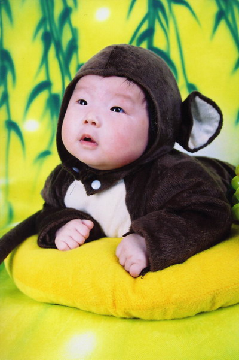
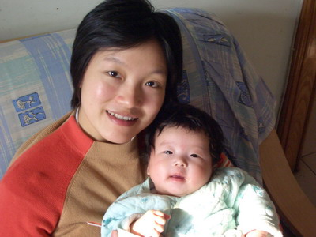

12月15日，第94天，曼曼趴在床上。我站在床前逗她抬头。曼曼两个胳膊第一次伸直，把上身撑了起来。不过她马上又没劲了，只撑了一两秒钟。
第98天，曼曼晚上从奶奶家回家，被包在睡袋里时开始哭闹，第一次发出了“姆妈”的声音。
百天，曼曼第一次把玩具用右手传到左手。这一天，曼曼还照了一套非常漂亮的百天照。照完照片以后，曼曼剃掉了她从出生以来一直留着的长长的、卷曲的黑发，剃成了一个小光头。

这个月曼曼进步神速，好几次晚上洗完澡在床上活动的时候，她都自己从仰卧翻成俯卧了。虽然翻的很费劲，而且需要爸爸妈妈在身边不断逗她让她不要翻回来。
曼曼学会了大叫和大笑，她奶声奶气的叫声和笑声真是太可爱了。
我这个月得了支气管炎，总是咳嗽。曼曼哪怕是在喝奶或者哭闹的时候，我要是咳嗽，她就会安静下来，十分专注的看着我半天，好像很担心的样子。她的神情让人忍不住想亲她一下，似乎她心里什么都明白。

在曼曼眼前晃动小摇铃的时候，她有几次已经伸出手够到摇铃了，不过不是每次都会伸手。
满4个月体检，曼曼身长63.8厘米，体重15斤8两。